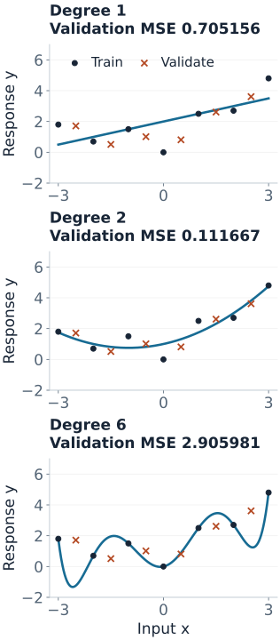
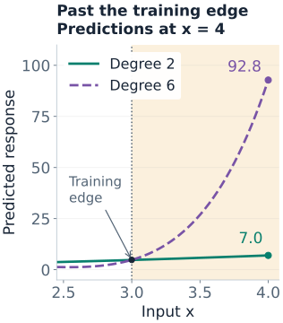

Polynomial and Basis Regression
A straight-line model has only two columns: an intercept and the input. Polynomial regression gives the linear solver extra columns such as $x^2$ and $x^3$. The resulting graph can curve even though the prediction remains linear in the unknown coefficients.
The central questions are different: Can the basis express the relationship? Can the coefficients be estimated stably? Does the fitted function predict new observations? A flexible basis, a stable solver, and a small training error answer different parts of that problem.
Linear in Parameters, Nonlinear in the Input
A basis is a collection of chosen functions $\phi_0,\ldots,\phi_d$. The mean model is
$$f_\beta(x)=\sum_{j=0}^d\beta_j\phi_j(x).$$For a degree-two polynomial, $\phi(x)=(1,x,x^2)$ and $f_\beta(x)=\beta_0+\beta_1x+\beta_2x^2$. Once an input is supplied, the basis values are known numbers. The solver estimates only their multipliers.
| Model term | Ordinary linear regression in its unknown coefficient? |
|---|---|
| $\beta_1x^2$ | Yes: $x^2$ is a fixed feature. |
| $\beta_1\sin x$ or $\beta_1e^x$ | Yes: the nonlinear function of $x$ is fixed. |
| $e^{\beta_1x}$ | No: the unknown is inside the exponential. |
| $\beta_1\sin(\omega x)$ with unknown $\omega$ | Linear in $\beta_1$ only if $\omega$ is fixed; jointly nonlinear otherwise. |
A log-link GLM can have mean $e^{x^\top\beta}$, but that is a different fitting setup from ordinary least squares on a fixed basis. The name “linear” must be interpreted in the model's stated scale and estimation procedure.
Fit a Quadratic to Seven Observations
Use these constructed training observations. The last column will turn out to be the residual from the least-squares quadratic; it is included so the fit can be checked by hand.
| $x$ | $y$ | $\phi(x)=(1,x,x^2)$ | Quadratic residual $e$ |
|---|---|---|---|
| $-3$ | 1.8 | $(1,-3,9)$ | 0.05 |
| $-2$ | 0.7 | $(1,-2,4)$ | $-0.30$ |
| $-1$ | 1.5 | $(1,-1,1)$ | 0.75 |
| 0 | 0 | $(1,0,0)$ | $-1$ |
| 1 | 2.5 | $(1,1,1)$ | 0.75 |
| 2 | 2.7 | $(1,2,4)$ | $-0.30$ |
| 3 | 4.8 | $(1,3,9)$ | 0.05 |
Stack the seven basis rows into $\Phi$. Least squares finds
$$\hat\beta=\arg\min_\beta\lVert y-\Phi\beta\rVert^2.$$Here the normal equations are small enough to display:
$$\begin{pmatrix}7&0&28\\0&28&0\\28&0&196\end{pmatrix}\hat\beta=\begin{pmatrix}14\\14\\77\end{pmatrix}.$$The middle equation gives $\hat\beta_1=14/28=0.5$. The other two give $\hat\beta_0+4\hat\beta_2=2$ and $4\hat\beta_0+28\hat\beta_2=11$, hence
$$\hat f_2(x)=1+0.5x+0.25x^2.$$At $x=2$, the three contributions are $1$, $1$, and $1$, so the prediction is 3. The observed response is 2.7 and its residual is $-0.3$. Across all seven rows, the squared residuals sum to 2.31, giving training MSE $2.31/7=0.33$.
The geometry is a projection in observation space: the fitted seven-vector $\hat y$ lies in the span of the three columns of $\Phi$, and the residual is perpendicular to each column:
$$\Phi^\top e=0,\qquad \sum_i e_i=\sum_i x_ie_i=\sum_i x_i^2e_i=0.$$The points do not need to lie on a straight line in the original $(x,y)$ plot. Linearity refers to combinations of the design columns. In code, use QR or SVD on $\Phi$ rather than explicitly inverting $\Phi^\top\Phi$; the displayed normal equations explain the answer, not the preferred numerical algorithm.
Choose Degree on Unused Observations
Fit degrees 1, 2, and 6 to those same seven training rows. Use the following six validation observations only to compare the fitted models:
| $x$ | Observed $y$ | Degree-two prediction |
|---|---|---|
| $-2.5$ | 1.7125 | 1.3125 |
| $-1.5$ | 0.5125 | 0.8125 |
| $-0.5$ | 1.0125 | 0.8125 |
| 0.5 | 0.8125 | 1.3125 |
| 1.5 | 2.6125 | 2.3125 |
| 2.5 | 3.6125 | 3.8125 |
| Degree | Number of coefficients | Training MSE | Validation MSE |
|---|---|---|---|
| 1 | 2 | 1.080000 | 0.705156 |
| 2 | 3 | 0.330000 | 0.111667 |
| 6 | 7 | 0, to numerical precision | 2.905981 |
The degree-one fit is $\hat f_1(x)=2+0.5x$. It misses curvature. The degree-six fit uses seven coefficients to interpolate seven distinct inputs exactly. It follows the training deviations closely and makes large errors between those inputs. Its zero training residual degrees of freedom also prevent estimating noise variance from the usual residual-variance formula.

Select degree two by validation MSE, then freeze that fitted model for a separate final check. The five test rows listed in the reproduction code give MSE 0.11. Only the selected model is evaluated on that test set in the reproduction code.
All three sets are explicitly constructed around $f(x)=1+0.5x+0.25x^2$ with fixed perturbations. The training perturbations were chosen to be orthogonal to the quadratic columns, making the hand calculation exact. This is an auditable example of the selection procedure, not a random benchmark or a claim that degree two is generally best.
The scikit-learn polynomial comparison demonstrates the same issue on a different dataset using cross-validation.
Reproduce the Fits and the Selection Boundary
The code uses Polynomial.fit, which fits in a scaled coordinate determined from the training inputs. Evaluation through the returned object reuses that coordinate transformation. convert().coef returns coefficients for the ordinary powers of the original $x$; this distinction is documented by NumPy.
Run the complete training, validation, and test example
import numpy as np
from numpy.polynomial import Polynomial
x = np.arange(-3., 4.)
y = np.array([1.8, .7, 1.5, 0., 2.5, 2.7, 4.8])
x_valid = np.array([-2.5, -1.5, -.5, .5, 1.5, 2.5])
y_valid = np.array([1.7125, .5125, 1.0125, 0.8125, 2.6125, 3.6125])
mse = lambda observed, predicted: np.mean((observed - predicted)**2)
models = {d: Polynomial.fit(x, y, deg=d) for d in [1, 2, 6]}
for d, model in models.items():
print(d, model.convert().coef,
"train:", mse(y, model(x)),
"validation:", mse(y_valid, model(x_valid)))
chosen_degree = min(models, key=lambda d: mse(y_valid, models[d](x_valid)))
selected = models[chosen_degree] # Freeze this training fit.
x_test = np.array([-2.75, -1.25, .25, 1.75, 2.75])
y_test = np.array([1.815625, .565625, 1.640625, 2.240625, 4.365625])
print("chosen degree:", chosen_degree, "test MSE:", mse(y_test, selected(x_test)))The figure generator independently checks the fits using SVD, QR, exact coefficient fractions, and a Chebyshev basis. It also verifies residual orthogonality, every displayed MSE, conditioning values, and extrapolation predictions.
In a larger workflow, repeat degree selection across suitable validation folds. After selecting the procedure, refitting on training plus validation data is possible; that creates a new fit and new preprocessing estimates, which must be frozen before final testing. We keep the original training fit here so every coefficient and prediction remains directly traceable.
Fixed operations such as squaring an input do not learn from data. Estimated centers, scales, knots, feature selection, and any data-adaptive basis do. Fit those steps within each training fold and apply the saved transformation to validation/test rows. Never recompute a new centering or orthogonalization from the test set. The scikit-learn leakage guide explains this training-only boundary.
Conditioning Is Different from Overfitting
The power matrix is a Vandermonde design. Large input magnitudes and high degrees can make its columns badly scaled or nearly dependent. The 2-norm condition number is the ratio of its largest to smallest singular value; a large ratio signals sensitivity in recovering coefficients. Forming the normal equations squares this condition number when the design has full rank.
Keep the same seven observations, but express the input as $s=x+100$. The very same fitted curve is
$$\hat f_2(s)=2451-49.5s+0.25s^2.$$At $s=100$, large terms cancel to produce 1. This changes the coefficient representation, not the underlying observations. For the exact quadratic designs in this example:
| Columns | 2-norm condition number |
|---|---|
| $(1,s,s^2)$, with $s=x+100$ | About $2.89\times10^7$ |
| $(1,x,x^2)$, centered inputs | 8.2504 |
| $(1,z,z^2)$, with $z=x/3$ | 3.1819 |
| Orthonormal columns from training QR | 1, to numerical precision |
Scaling improves numerical behavior, but does not reduce the degree-six model's flexibility. A stable Chebyshev-basis implementation reproduces its same validation MSE 2.905981 and the same extrapolation below. Its poor prediction here is not just floating-point failure. NumPy's fitting notes discuss ill conditioning, SVD, and alternative polynomial bases.
Same Function Space, Different Coefficients
On our symmetric training grid, the columns $1$, $x$, and $x^2-4$ are mutually orthogonal. The number 4 is the training average of $x^2$. Their squared lengths are 7, 28, and 84; dividing by the respective square roots makes them orthonormal.
The fitted polynomial can therefore also be written
$$\hat f_2(x)=2+0.5x+0.25(x^2-4).$$The intercept coefficient changes from 1 to 2 because the third basis function now contains a constant term. Evaluating the full expression gives the same predictions at every $x$.
More generally, an invertible change of basis preserves unpenalized OLS fitted values. Matching training column spaces guarantees matching training predictions. To guarantee matching predictions at new inputs, the basis functions must be related by the same fixed transformation there too. For QR, save the training transformation and apply it to new basis rows; do not run an unrelated QR decomposition on the new rows.
This invariance generally fails for coefficient penalties. Ridge penalizes squared coefficient sizes and lasso penalizes absolute sizes in the chosen coordinates. A rescaling or general basis change alters that penalty unless it is transformed consistently. An orthogonal rotation within ridge's penalized coordinates is a special case that preserves its squared norm.
A Stable Polynomial Can Still Extrapolate Badly
All training inputs lie in $[-3,3]$, and the validation/test examples also stay inside that range. At the unobserved input $x=4$, the fitted quadratic predicts 7, while the degree-six polynomial predicts 92.8.
The degree-six interpolant, written in the original power basis, is
$$\hat f_6(x)=\tfrac12x+\tfrac{1669}{600}x^2-\tfrac{203}{240}x^4+\tfrac{77}{1200}x^6.$$The terms cancel near the training observations but grow very differently farther away. At $x=5$, its prediction reaches 546. The quadratic's smaller values are not proof that its continuation is physically correct; there are no external measurements supporting either extrapolation here.

High-degree global polynomials can oscillate, especially near boundaries; the classical Runge phenomenon is a particular interpolation example, not a synonym for every bad polynomial fit. Use validation that matches deployment: interpolation among observed inputs and prediction beyond their range are different tasks.
Multiple Inputs, Interactions, and Other Bases
For two numeric inputs, a complete quadratic basis is $(1,x_1,x_2,x_1^2,x_1x_2,x_2^2)$. Its local effect of $x_1$ is
$$\frac{\partial f}{\partial x_1}=\beta_1+2\beta_{11}x_1+\beta_{12}x_2.$$The interaction allows that effect to depend on $x_2$. Strong hierarchy retains both main effects when their interaction is present; weak hierarchy retains at least one. These are modeling conventions or constraints, not automatic consequences of fitting least squares. Including a complete polynomial basis also makes centering a change of coordinates rather than a change of available functions.
Feature counts grow quickly: a full total-degree-$d$ basis in $p$ inputs contains $\binom{p+d}{d}$ columns including the intercept. Numeric category labels are not automatically meaningful inputs for powers. The polynomial-feature documentation illustrates full expansions and interaction-only alternatives.
Other fixed bases include Fourier functions for periodic effects and piecewise polynomial bases for local shape. Splines and GAMs develop the latter. Local support of a basis function does not guarantee that changing one observation only changes a local part of a fitted curve; coefficient estimation and smoothing can couple regions.
Interpretation and Failure Checks
- Local slopes: our quadratic has derivative $0.5+0.5x$. Its coefficient on $x$ is the slope at zero, not a global slope.
- Rank: a univariate degree-$d$ fit needs at least $d+1$ distinct inputs for unique coefficients. Repeated rows do not create new distinct input locations.
- Too many columns: with degree above six here, many polynomials can fit the seven points. Minimum-norm coefficients depend on the chosen basis and are not evidence for a unique extrapolation.
- Numerics versus statistics: inspect rank and singular values, but also residual structure, validation error, and prediction stability near the boundaries.
- Uncertainty: ordinary linear-model inference still needs its error assumptions; intervals that treat a selected degree as fixed omit uncertainty from the selection process.
For the underlying mathematics, see OLS and projection, numerical solvers, and regularization.
Quick Checks
| Question | Answer |
|---|---|
| Why is the quadratic a linear model? | Its prediction is a linear combination of the fixed columns $1,x,x^2$. |
| Does the exact training fit win here? | No. Degree six has zero training error but validation MSE 2.905981, much worse than degree two. |
| Does changing basis cure overfitting? | A numerically better basis can preserve the same overfit unpenalized function. |
| Can the test set determine its own scaling? | No. Reuse the transformation learned from the permitted training data. |
| Does good in-range validation justify $x=4$? | No. That prediction is outside the support tested by this example. |